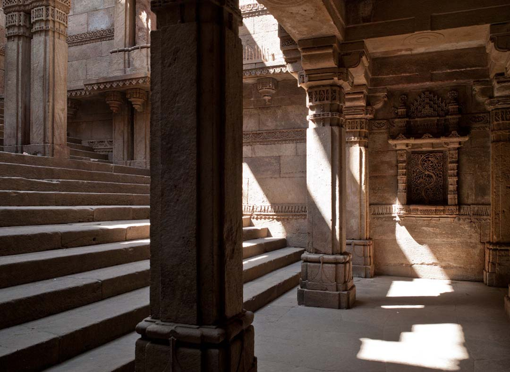
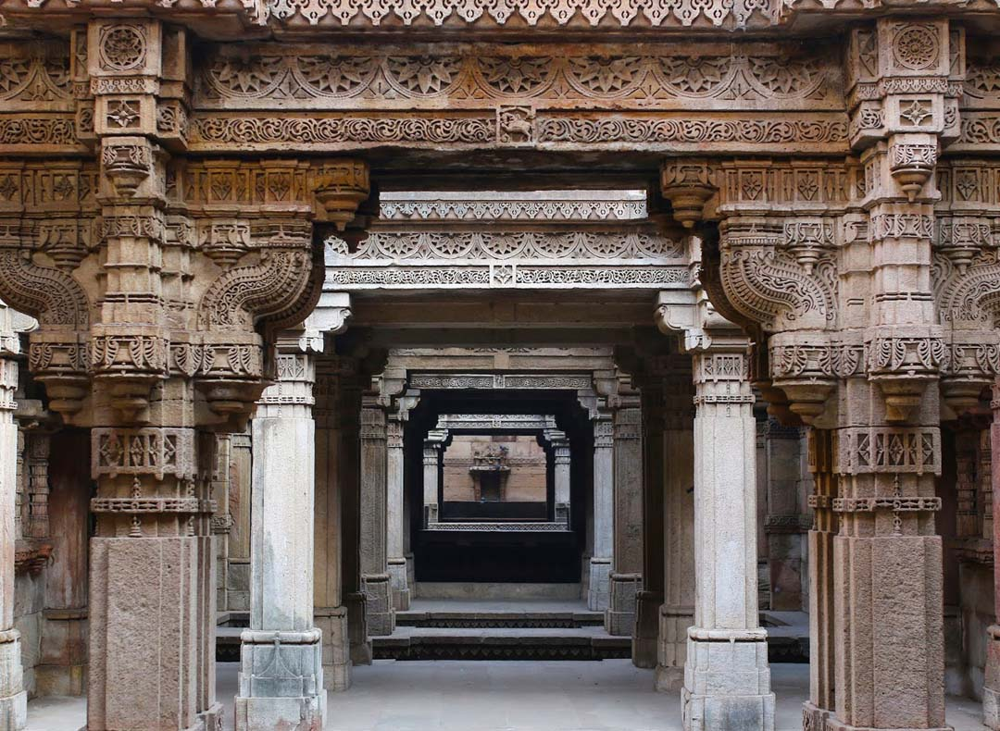
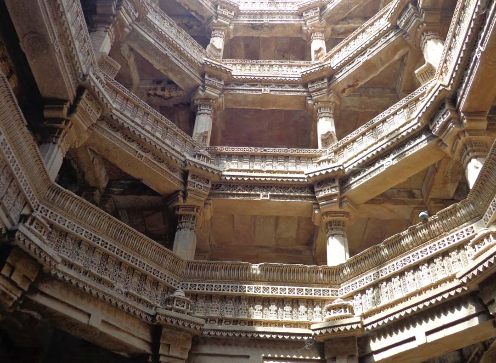
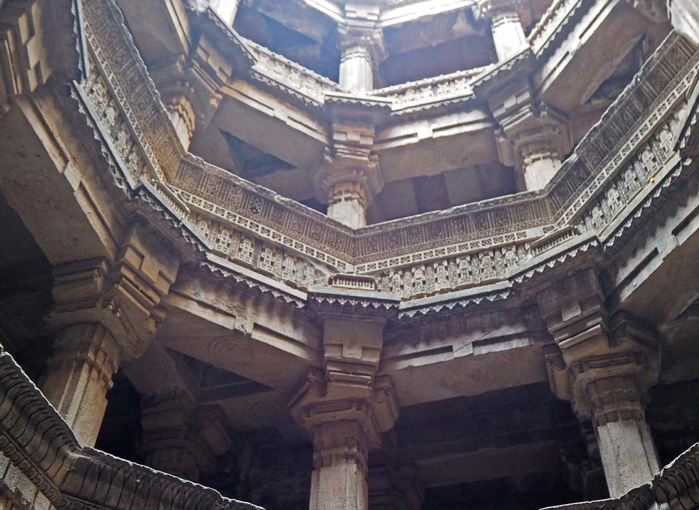
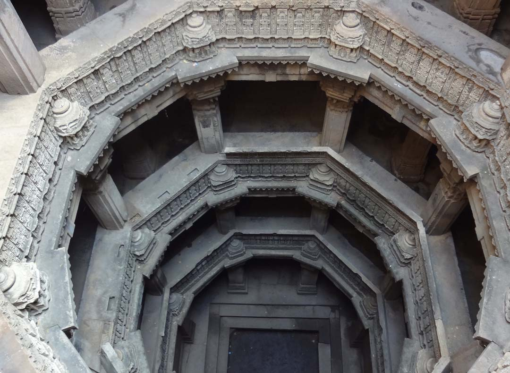

Set in the quiet village of Adalaj, this vav has served as a resting place for hundreds of years for many pilgrims and caravans along their trade routes. Built in 1499 by Queen Rudabai, wife of the Vaghela chief, Veersinh, this five-storey stepwell was not just a cultural and utilitarian space, but also a spiritual refuge. It is believed that villagers would come everyday in the morning to fill water, offer prayers to the deities carved into the walls and interact with each other in the cool shade of the vav. There is an opening in the ceilings above the landing which allows the light and air to enter the octagonal well. However, direct sunlight does not touch the flight of steps or landings except for a brief period at noon. Hence some researchers say that the atmosphere inside the well is six degrees cooler than the outside. Another remarkable feature of this stepwell is that out of the many stepwells in Gujarat, it is the only one with three entrance stairs. All three stairs meet at the first storey, underground in a huge square platform, which has an octagonal opening on top. The vav is a spectacular example of Indo-Islamic architecture and design. The harmonious play of intricate Islamic floral patterns seamlessly fusing into Hindu and Jain symbolism embody the culture and ethos of those times. All the walls carved by ornamentation, mythological scenes along with everyday scenes of women churning buttermilk, dancers accompanied by musicians, women adorning themselves and a king sitting on a stool. Fascinating to many visitors is the Ami Khumbor (a pot that contains the water of life) and the Kalp Vriksha (a tree of life) carved out of a single slab of stone. There is a belief that the small frieze of navagraha (nine-planets) towards the edge of the well protects the monument from evil spirits.
|  |  |  |
|  | In the quiet neighbourhood Asarwa village, northeast of the walled tucked away between a sleepy residential area and the coal yards of Ahmedabad on a little side street, you will find Dada Harir Vav. At ground level, you may not see much, but as you step up to the top of the stairs, you suddenly see a deep cascade of stairs and columns plunging down several stories, with shafts of light falling on beautiful carvings and birds and bats flitting in and out of the shadowy corners. Built around 500 years ago by Sultan Bai Harir, this stepwell is like others around Gujarat, with elaborate craftsmanship and construction built underground to provide access to a permanent source of water. For many years stepwells like this one provided most of the water for the city during the long dry seasons. On the walls, as you descend, you will find carvings of all type, including some in Sanskrit as well as in Arabic script. The well is best visited in the late morning when light penetrates down the shaft. |  |
Mata Bhavani`s stepwell was built in the 11th century during Solanki dynasty rule in Gujarat. It is one of the earliest existing example of stepwells in India. A long flight of steps leads to the water below a sequence of multi-story open pavilions positioned along the east/west axis. The elaborate ornamentation of the columns, brackets and beams are a prime example of how stepwells were used as a form of art. A much later constructed small shrine of Hindu Goddess Bhavani is located at lower gallery from which the stepwell derived its name. The stepwell is 46 metre long and 5.1 metre wide at entrance. It has three stories and three pavilions. The diameter of well is 4.8 metre.
Back